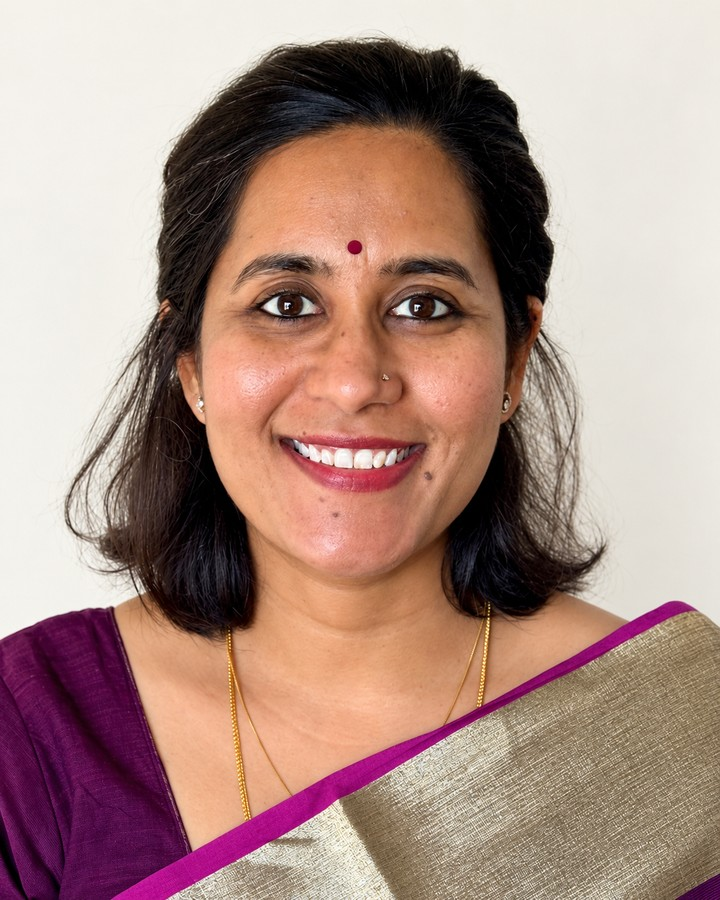

S Anukriti
The World Bank
Senior Economist, Development Research Group
Co-lead, Center for Research on Women and Jobs
Development Economics · Gender & Family · Political Economy
I study why gender gaps persist in developing countries and which policies can close them. My research examines how families, social norms, and institutions shape women’s fertility, work, and well-being across South Asia, Sub-Saharan Africa, and the Middle East. I evaluate government policies and new interventions—from financial incentives and childcare laws to peer support and digital job platforms—to identify what can expand women’s agency and economic opportunities.

Recent publications
All publicationsBring a Friend: Leveraging Financial and Peer Support to Improve Women's Reproductive Agency in India
Journal of Development Economics, 2026 with Catalina Herrera-Almanza and Mahesh KarraSon Preference, Intergenerational Household Dynamics, and Women's Mental Health in India
Journal of Development Economics, 2026 with Catalina Herrera-Almanza, Shahadat Hossain, and Mahesh KarraCurrent research
Can Effective Policy Implementation Alter Political Selection? Evidence from Female Legislators in IndiaWith Rossella Calvi and Abhishek Chakravarty
Digital Job Search and the School-to-Work Transition: Evidence from a Field Experiment in IndiaWith Catalina Herrera-Almanza and Sophie Ochmann
Evaluating the Impacts of Training and Access to Digital Platforms on Female Domestic Workers in BangladeshConditionally accepted at the Journal of Development Economics via pre-results review
All working papers and projects in progress
Writing for policy audiences
What's up with gender norms?Development Impact, May 2026
Electing women improves healthcare for female constituents, but can trigger a domestic violence backlashVoxDev, April 2026
From marriage penalties to child penalties: how development reshapes women's workDevelopment Impact, April 2026
All writing, podcasts, and interviews
In the news
Research featured in The Economist · BBC · CNN · The Hindu · LiveMint · Business Standard · The Print
Affiliations
Research Fellow, IZA@LISER · Board Member, WEE-DiFine · Board Member, WEE-Connect
Profiles
Google Scholar · IZA · World Bank · LinkedIn